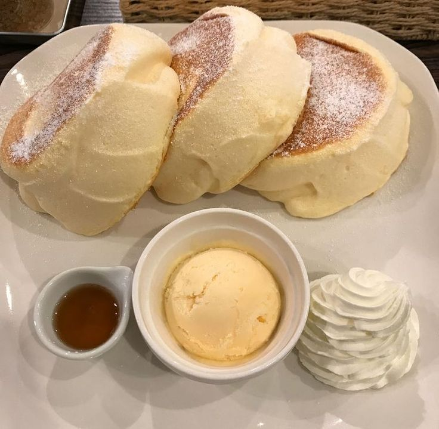

Ingredients
- 2 large eggs
- 1 tablespoon milk
- 1 tablespoon vegetable oil
- 1 teaspoon vanilla extract
- 2 tablespoons sugar
- 1/2 cup all-purpose flour
- 1 teaspoon baking powder
- A pinch of salt
- Powdered sugar for dusting
- Maple syrup and whipped cream for serving
Instructions
- In a bowl, whisk the egg yolks, milk, vegetable oil, vanilla extract, and sugar until well combined.
- In another bowl, sift the flour, baking powder, and salt together. Gradually add to the egg mixture and mix until smooth.
- In a separate bowl, beat the egg whites until stiff peaks form. Gently fold the egg whites into the batter until no white streaks remain.
- Heat a non-stick skillet over low heat and lightly grease it. Pour a few spoonfuls of batter onto the skillet to form pancakes.
- Cover with a lid and cook for about 4-5 minutes on each side until golden brown and fluffy.
- Serve the pancakes stacked high, dusted with powdered sugar, and topped with maple syrup and whipped cream. Enjoy!